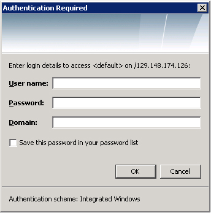

프로토콜 지원: HTTP, HTTPS, FTP, GOPHER, 및 SOCKS
이 장에서는, 다음의 토픽에 대해 설명합니다.
HTTP, FTP, 및 GOPHER
Java Plug-in 는, HTTP, FTP, 및 GOPHER 프로토콜을 지원합니다. 이 안에는, 편입 프록시 구성 지원도 포함되어 있습니다.
HTTPS
처음에
Java Plug-in 에서는, HTTPS 가 Java Secure Socket Extension (JSEE)를 개입시켜 지원되고 있습니다. JSEE 는, Java 플랫폼에 대해서 SSL 와 HTTPS 의 Java 구현을 제공하고 있습니다.
에러 처리의 지원
HTTPS 서버에의 액세스시에, 에러가 발생하는 경우가 있습니다. Java Plug-in 는, JSSE 에 훅 하는 것으로써, 다음의 타입의 에러 처리를 제공합니다.
- 호스트명의 불일치: HTTPS 서버의 호스트명이 서버 증명서의 이름과 일치하지 않는 경우, 경고 다이얼로그가 표시됩니다.
- 신뢰되지 않는 서버 증명서: SSL 핸드 쉐이크시에 서버 증명서를 검증할 수 없는 경우, 경고 다이얼로그가 표시됩니다.
- 신뢰되지 않는 클라이언트 증명서: 서버에 의해 클라이언트 인증이 필요하게 되어 또한 클라이언트 증명서를 검증할 수 없는 경우, 경고 다이얼로그가 표시됩니다.
- 서버 인증: 클라이언트가 HTTPS 서버상의 보호된 디렉토리에 액세스 하는 경우, 사용자명 및 패스워드의 입력이 요구됩니다. 주:현재로서는, 기본적인 인증만이 지원되고 있습니다.
JSSE 를 이용하는 HTTPS 의 잠재적인 문제점
JSSE 를 개입시킨 HTTPS 지원에 의해, 브라우저 고유의 문제의 대부분이 제거됩니다만, 개발자가 유의할 필요가 있는 몇개의 문제가 존재합니다.
- 신뢰되지 않는 서버 증명서: HTTPS 접속의 확립시에 SSL 핸드 쉐이크를 하면(자), 서버 증명서의 검증이 Java SE 의 루트 CA 스토어에 대해서 행해집니다. 다만, Java SE 가 지원하는 루트 CA 증명서의 수는, 브라우저가 지원하는 루트 CA 증명서의 수 정도 많지 않습니다. 이 때문에, 신뢰되지 않는 서버 증명서로 문제가 발생하는 경우가 있습니다.
- 클라이언트 인증: Java Plugin 는, JRE 1.5 이후에 브라우자키스토어를 지원하고 있습니다. 브라우자키스토어를 사용해, HTTPS 서버의 클라이언트 인증은, Internet Explorer 와 Mozilla 패밀리의 브라우저로 다른 방법으로 실행됩니다. Internet Explorer 에서는, 증명서는 JRE 키스토어에 임포트 되지 않습니다. Mozilla 패밀리의 브라우저에서는, Mozilla 키스토어로부터 증명서를 읽어들이기 위해서(때문에) JSS 패키지를 인스톨 할 필요가 있습니다. 디폴트에서는, 브라우자키스토어의 지원는 온이 되어 있습니다.
- 에러 처리의 레벨: Java Plug-in 는, 현재로서는, 전의 섹션에 든 에러 타입을 처리합니다. 다만, Java Plug-in 의 인식하지 않는 다른 에러 타입이 존재하는 경우, Java 애플릿의 처리는 중단됩니다.
Socks
현재, Java Plug-in 는 SOCKS 버젼 4 를 지원합니다.
주: HTTP/HTTPS 의 경우, SOCKS 프록시 서버-를 Web 프록시 서버-와 병용 해, 캐쉬를 추가할 수 있습니다. 다만, 이 동작은, 브라우저내의 같은 구성을 Java Plug-in 를 사용하지 않고 실행하는 경우의 동작과는 다를 가능성이 있습니다.
NTLM 인증
Java Plug-in 에서는, HTTP/HTTPS 용의 NTLM 인증 프로토콜이 지원되고 있습니다. NTLM 인증을 요구하는 서버에 사용자가 액세스 하려고 하면(자), 다음의 다이얼로그가 표시됩니다.

인증을 실시하려면 ,「사용자명」,「패스워드」, 및「도메인」의 각 필드에 입력을 실시합니다.